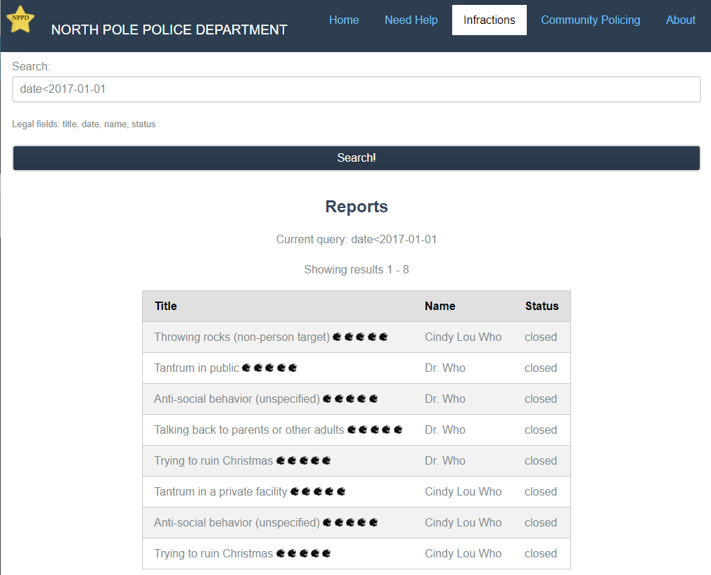
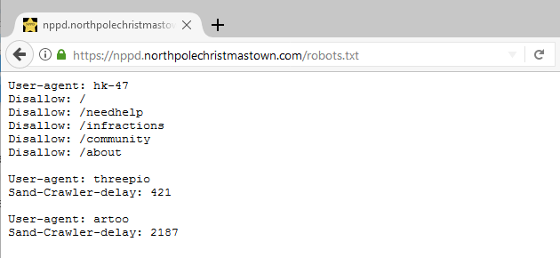
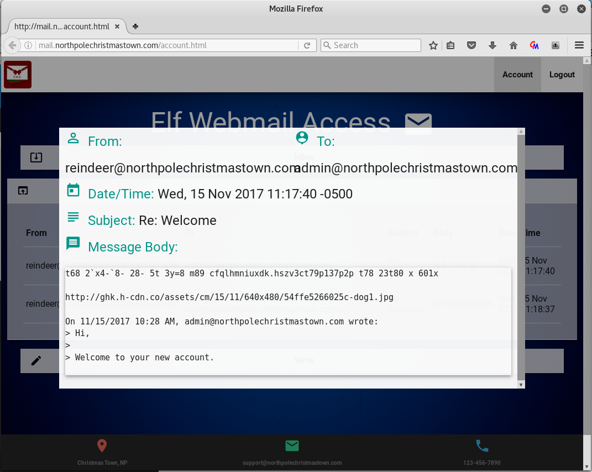
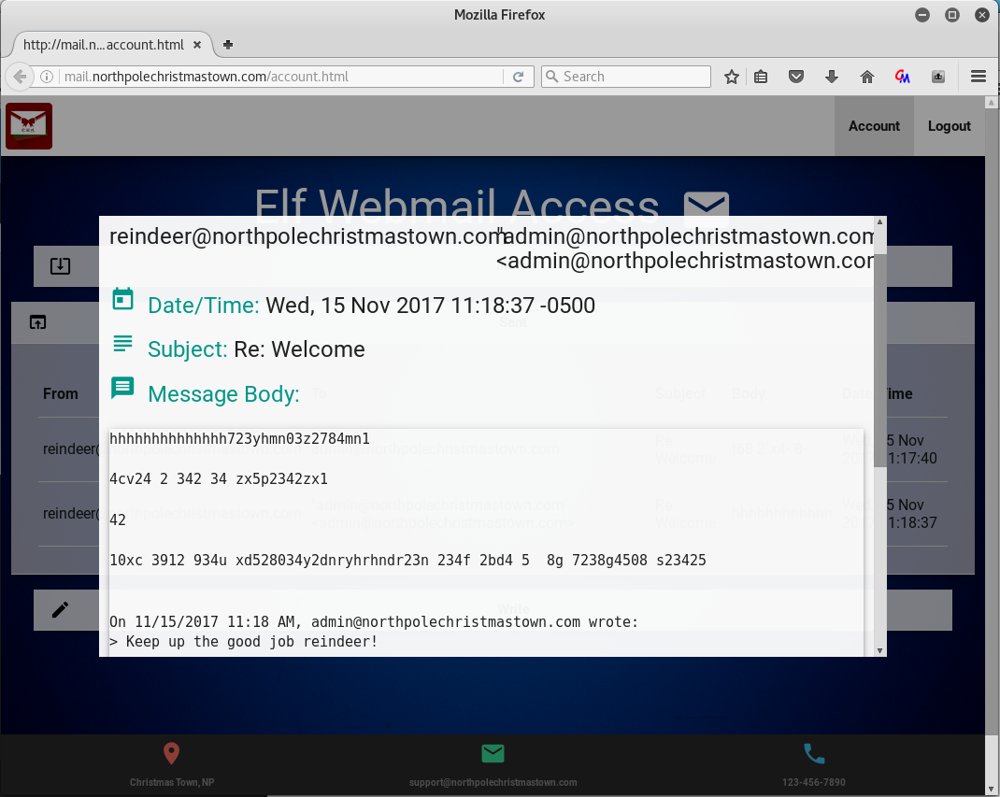

The creators of the Holiday Hack Challenge like to spread humor and pop culture references throughout the game for observant hackers to find. Here are a few items I picked up on.. no doubt there are more.
North Pole Police Department
The North Pole Police Department database primarily contained infractions for the year 2017, however if you search for entries prior to 2017-01-01, you'll find the villians from the past two Holiday Hack Challenges.

Also on the NPPD web server, there is a robots.txt file that contains several references to Star Wars.

- HK-47, artoo (R2-D2), and threepio (C3-PO) are all droids from the series.
- 2187 is the cell number where Leia was kept on the Death Star.
- 421 (aka TK-421) is a stormtrooper who guarded the Millenium Falcon when it landed on the Death Star to rescue Leia.
In addition, the web page references the following:
- Josh and Jess Dosis, protagonists from previous editions of the Holiday Hack Challenge.
- SantaGram, the social messaging app featured in last year's Holiday Hack Challenge.
- Sheriff R. Purvis Coaltrain, whose name bears a remarkable similarity to Sheriff Rosco P. Coltrane, from the 1980's TV series Dukes of Hazzard.
- A quote from the movie Elf: "two hours, then going ice skating, then eating a whole roll of Tollhouse Cookiedough as fast as you can, and then snuggling."
SMB File Server
The file "BOLO - Munchkin Mole Report.docx" references two known Munchkin Mole offenders: Bini Aru and Boq Questrian. These are both characters created by L. Frank Baum for his books about the land of Oz.
The document also states "The pair mysteriously disappeared after speaking an unknown word sounding like "puuurzgexgull." This is a reference to another invention of L. Frank Baum's:
Pyrzqxgl is a magic word so powerful that, properly pronounced, it can produce instant transformations. The typical formula consists of the caster stating who he wishes to become what, and punctuating with a firm Pyrzqxgl! (From http://www.codehappy.net/pyrzqxgl/pyrzqxgl.htm)
Reindeer really know how to.. e-mail?
If you read all of the e-mail messages on the EWA server, not only will you pick up some helpful clues, you'll also find a conversation between Alabaster (using the admin account) and the Reindeer.

